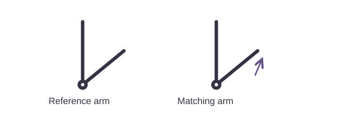
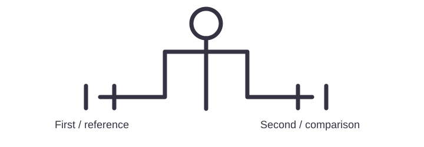
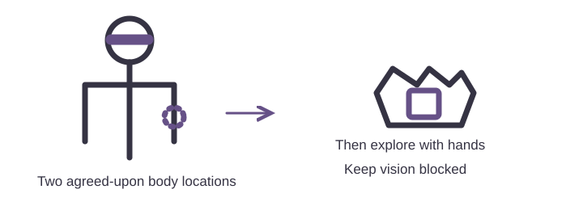
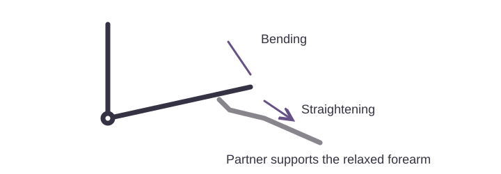

EXS101 · Motor Behavior
Use four partner activities to investigate how sensory information helps you judge limb position, movement, load, and an unseen object.
Your work saves in this browser on this device when local storage is available. A JSON backup is optional. Use it to move your work to another device or keep a separate copy. Submit the finished PDF in Canvas.
This clears all responses, photos, and saved work for this lab in this browser. Download a backup first if you want to keep a copy.
Start here in class, before the demonstrations. Use Reference 2 · Motor Control, Sensory Input & Proprioception in the Motor Behavior module of your own EXS101 Canvas course. Review the explanations of sensory receptors, proprioception, and sensory versus motor signals. Use brief notes in your own words; keep the reference open.
Use Reference 2 for the lab responses. These OpenStax readings offer another explanation if you get stuck.
Use the receptor table and worked examples in Reference 2. For each entry, identify its location and the information it detects. A brief phrase for each is enough. You will connect the receptors to your observations after the activities.
Review all four sources of sensory information. Pay attention to the difference between touch at the skin and skin stretch that provides information about limb position or movement.
Select Finish prep to save your responses in this browser and open the activity tabs. Your responses will carry into your report. Wait for your instructor to demonstrate the four activities. Then move to the lab space and complete all four with a partner. Record your own evidence and write your own reflection. If you need an adapted setup, check with your instructor and label your role and setup in your trial notes.

Activity 1 of 4. Work seated with a partner. Use a comfortable elbow range and keep your upper arms near your sides.
Use the same observer for both conditions in a trial.


Use one object per student. Compare two agreed-upon body locations, then explore the object with your hands. This activity examines touch and object recognition as part of sensory input.

Reopen Reference 2 in the Motor Behavior module of your EXS101 Canvas course. Refer to a specific trial or comparison from each of the four activities across your responses. Name the relevant reference tab or concept and explain how it helps you interpret your evidence. Similar results, unexpected results, and incorrect guesses are all useful evidence.
Use brief, complete explanations. Each response should connect your own evidence to the relevant concept from Reference 2.
Before exporting, add one captioned photo on each of the four activity tabs. Setup or equipment photos are acceptable; keep faces out of frame.